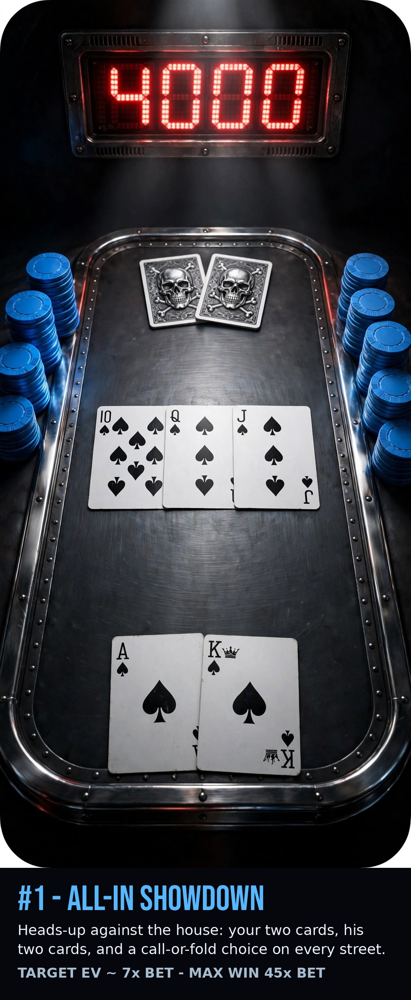
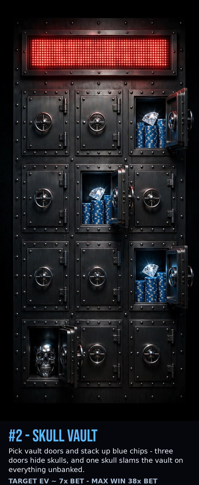
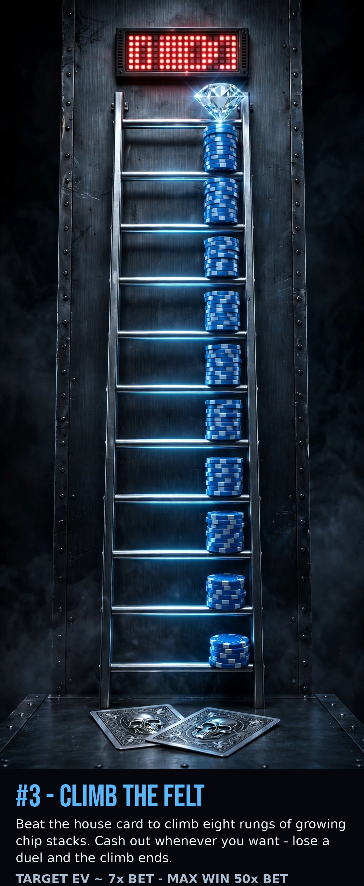
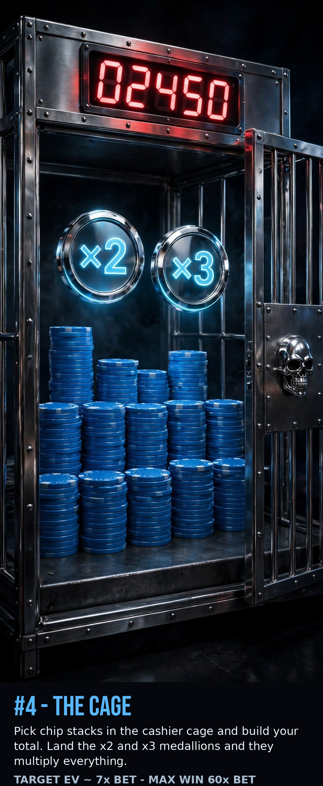
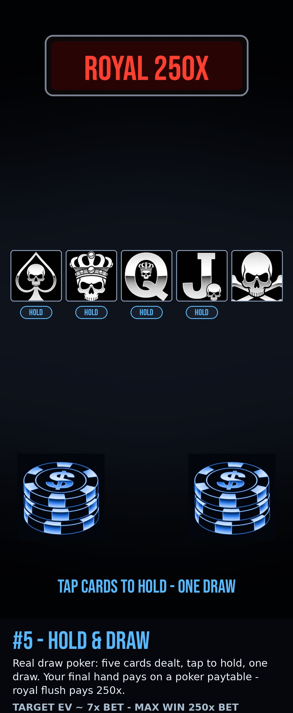

Poker Luxe has the Engine-Rev celebration and free spins — but no bonus game of its own. Classics has the garage, Skyline has the dice, Pearl's has the bones and the wheel. Here are five games built for Luxe: cards, blue chips, skulls and vaults. Pick one by number.

YOUR MOVES You are dealt two cards face up; the house gets two face down. The pot starts at 5× your bet. Flop, turn and river come one street at a time — after each street you choose CALL (stay in, the pot grows) or FOLD (walk away with the cash-out value on screen, which grows every street).
HOW IT ENDS Call the river and it is a showdown: the house cards flip and the best five-card hand takes the whole pot. A tie splits it.
THE FEEL A real heads-up poker hand against the house, three genuine decisions deep.
POT GROWS 5× → 10× → 20× → 45× · TARGET EV ≈ 7× BET · MAX WIN 45× BET

YOUR MOVES Twelve riveted vault doors. Nine hide blue-chip prizes (1×–8× your bet); three hide skulls. Open doors one at a time — every prize stacks into your VAULT meter. After any safe door you can STOP & BANK and walk with the meter.
HOW IT ENDS Open a skull and the vault slams shut — everything still in the meter is gone. Open all nine prize doors and you have cleared the vault.
THE FEEL Greed vs. nerve, one door at a time. Bank early and safe, or push for the clear.
PRIZE DOORS SUM TO 38× · TARGET EV ≈ 7× BET · MAX WIN 38× BET

YOUR MOVES Eight rungs: 1×, 2×, 3×, 5×, 8×, 12×, 20×, 50×. Every rung is a card duel — your face-down card against the house's. Flip yours: beat the house card and you climb (a tie flips again, free). After every rung you can CASH OUT and take that rung's prize instead of climbing.
HOW IT ENDS Lose a duel and the climb is over — but rungs 3 and 6 are LOCKED rungs: reach one and that prize is guaranteed even if you fall later.
THE FEEL A ladder of growing chip stacks with a cash-out decision on every single rung.
TOP RUNG 50× · TARGET EV ≈ 7× BET · MAX WIN 50× BET

YOUR MOVES The cashier's cage holds 14 tiles: ten chip stacks (1×–6× your bet), a ×2 medallion, a ×3 medallion, and two skulls. You get 8 picks. Stacks add to your total as you pick them; the medallions multiply the final total.
HOW IT ENDS A skull slams the cage gate and ends your picks early — but everything you have already picked is yours. Skulls here never take chips back.
THE FEEL Build the biggest stack you can, then hunt the multipliers to blow it up.
ALL STACKS (10×) WITH BOTH MEDALLIONS = 60× · TARGET EV ≈ 7× BET · MAX WIN 60× BET

YOUR MOVES Five cards are dealt face up from the machine's own deck (this mock is built from the game's real card faces). Tap the cards you want to keep — they get a HOLD tag — then hit DRAW once. The rest are replaced.
HOW IT ENDS Your final five-card hand is scored on the poker paytable posted on the bonus screen, from a Jacks-or-better pair up to the royal.
THE FEEL Straight video-poker skill: your read of the deal decides the game.
ROYAL FLUSH 250× · TARGET EV ≈ 7× BET · MAX WIN 250× BET
Examples only — nothing is wired into the game yet. Pick a number and that game gets built into Poker Luxe.
© 2026 J-Dawgs Industries LLC